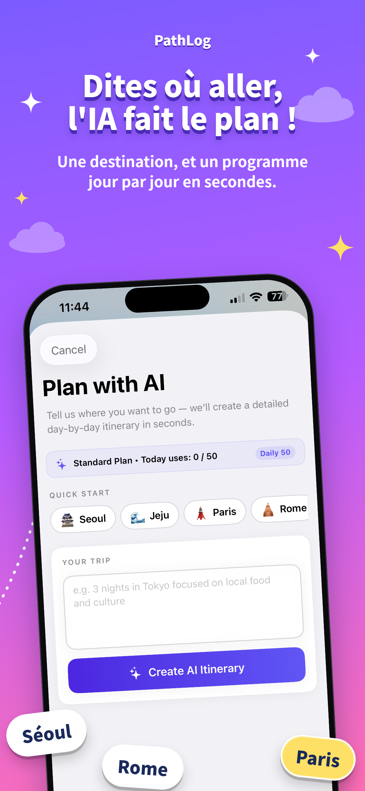
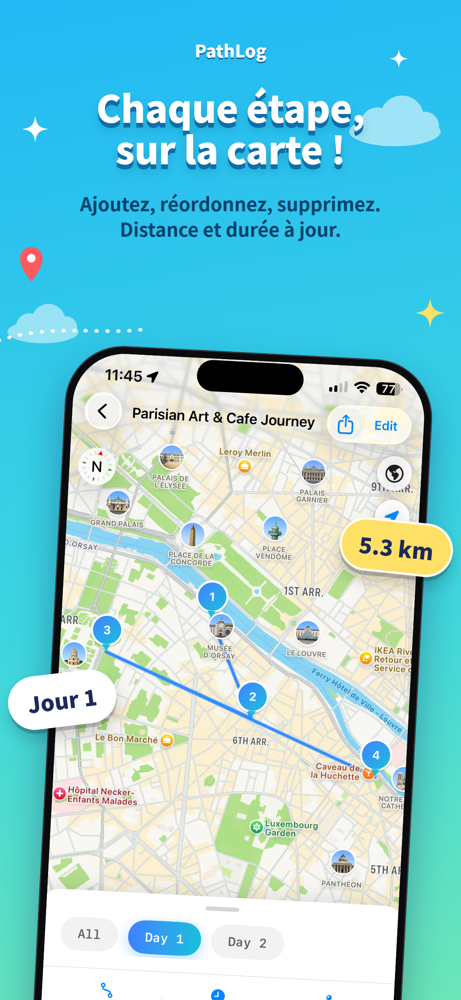

ÉCHAPPÉES CÔTIÈRES
ÉCHAPPÉES CÔTIÈRES01 — RALENTIRSuivre la lumière
Suivre la lumière
du soleil.
Des rivages où il fait bon se perdre.
De la première idée au dernier arrêt inoubliable. Donnez vie à vos rêves de voyage grâce à des itinéraires créés par IA et des cartes interactives en direct.
Un espace élégant pour les destinations dont vous rêvez, les chemins empruntés et les souvenirs gravés.
Conçu pour iPhone et iPadL'énergie des grandes métropoles, le calme des rivages, les sentiers sinueux de montagne. Où que votre curiosité vous porte, PathLog vous guide.
ÉCHAPPÉES CÔTIÈRESDes rivages où il fait bon se perdre.
 AVENTURES EN SENTIER
AVENTURES EN SENTIERTrouvez votre part de nature sauvage.
 EXPLORATIONS URBAINES
EXPLORATIONS URBAINESChaque rue a une histoire.
Découvrez la petite application qui s'occupe de tous les détails pour vous laisser savourer chaque moment essentiel.
Explorer l'application ↗

Explorateur d'un week-end ou grand passionné de plein air ? Choisissez votre rythme : PathLog réunit tout au même endroit.
 MODE TRAVEL
MODE TRAVELGénérez un itinéraire jour par jour avec l'IA, ajustez chaque étape et lancez la navigation avec Apple Plans ou Google Maps.
 MODE TRAIL
MODE TRAILImportez des tracés KML créés sur Google Earth, visualisez votre parcours sur la carte et suivez votre trace en temps réel.
Trois étapes simples. Une infinité de voyages possibles.
Dites à PathLog où vous voulez aller. L'IA génère un itinéraire quotidien, ou importez directement votre parcours KML.
Explorez l'ensemble sur une carte interactive. Ajoutez, supprimez et réorganisez vos étapes comme vous l'entendez.
Lancez le guidage pas à pas, suivez votre tracé et exportez en KML pour partager vos coups de cœur.
Des outils performants d'une totale simplicité, du premier croquis jusqu'au dernier arrêt.
Construisez des séjours sur plusieurs jours avec des suggestions inspirantes et un tracé cohérent.
Visualisez vos étapes jour après jour, réagencez l'ordre et gardez l'œil sur les distances et temps de trajet.
Importez et exportez des fichiers ouverts KML depuis Google Earth, Google My Maps ou d'autres applications.
Choisissez Apple Plans ou Google Maps pour vos déplacements et suivez votre sentier avec le GPS.
Conservez vos voyages et sentiers dans votre carnet personnel, toujours prêt pour la prochaine aventure.
Stockage local sur votre appareil, aucun compte obligatoire, et interface multilingue en 4 langues.
“Le meilleur du voyage n'est pas le programme. C'est tout ce que le programme rend possible.”
CONÇU POUR LA JOIE DU DÉPART
Commencez à explorer gratuitement. Passez au niveau supérieur dès que vous êtes prêt.
Pour les curieux, les rêveurs et les premiers départs.
Pour tous ceux qui savent qu'il y a toujours un nouvel horizon à découvrir.
Tarifs indiqués en USD selon l'App Store local. Consultez les tarifs et la disponibilité dans l'App Store de votre pays.
Une seule application. Une infinité de possibilités. Disponible sur iPhone et iPad.
Download on theApp Store